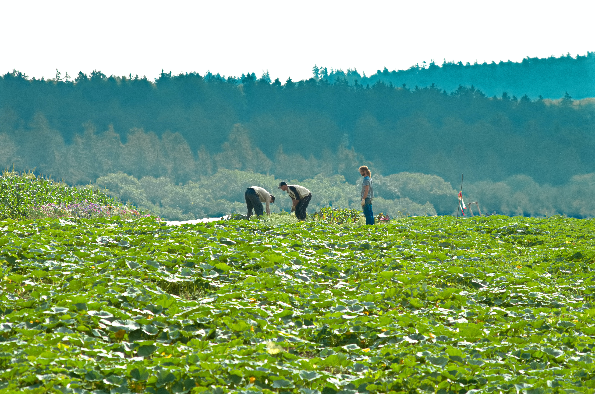

Noticia
Durante a feira de Bahia Farm Show que ocorreu de 6 a 10 de junho deste ano, a TIM celebrou a primeira parceria do segmento de Pecuária, que realizou com o grupo Stracci. O grupo fundado na década de 80 em Barreiras- BA, que cultivam os seguintes produtos milho, soja e a criação de bovinos.
Comforme o relatado por Luís Eduardo Magalhães, o intuito de parceria é de levar a internet 4g para o campo e cobrir uma área aproximada de 5.200 hectares essa região é conhecida como Matopiba, com essa cobertura possibilitara que o grupo Stracci realize otimização e redução de ricos e custos em sua produção de milho, soja e a criação do gado, podendo implementar soluções tecnológicas para cada situação específica, como, por exemplo, consiga ter maior assertividade na previsão do tempo, podendo tomar medidas, de precação compra geadas evitando assim perca de produção.
A TIM tem grande interesse na região, pois é uma área de grade potencial acrícula, que pega parte da dos Estados do Maranhão, Tocantins, Piauí e Bahia. Descreve a área como agricultável, que tem aproximadamente 35 milhões de hectares aptos para agricultura, a Matopiba tem por volta de 320 mil propriedades. A Tim pretende cobrir uma área aproximada de 16 milhões de hectares ainda em 2023, na AgriShow anunciou que já havia coberto mais de 14 milhões de hectares, com internet 4g no País (MAGALHÃES, 2023).
